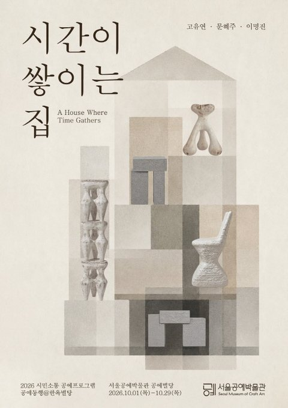

SCENE:SEOUL아래로 스크롤 ↓
EDITOR’S NOTE
나의 취향으로 발견하는,
나의 취향으로 발견하는,
또 다른 서울.
전시부터 공연, 팝업과 이벤트까지.
마음에 드는 장면을 저장해 나만의 문화 탐방을 완성해 보세요.
FIND YOUR
SCENE.


MY CALENDER.
10월
13
화요일

EXHIBITION / 성수
이번 주의 전시 노트
13:00–19:00 · 성동구
예시 일정
PERFORMANCE / 대학로
무대 위의 새로운 이야기
19:30 · 종로구
예시 일정
10월
14
수요일

POP-UP / 성수
오늘만 만나는 팝업
11:00–20:00 · 성동구
예시 일정
10월
15
목요일
다른 날짜의 일정 ↘
새로운 일정은 추후 업데이트됩니다.
※구성 예시입니다. 하트 선택은 현재 페이지에서만 표시되며 실제 계정에 저장되지 않습니다.